We propose a fast iterative solver for large-scale PDE-based nonlinear inverse problems, where measurements are used to reconstruct the spatial variation of parameters. Our motivation is transient hydraulic tomography, which is a method to estimate hydraulic parameters related to the subsurface from pressure measurements obtained by a series of pumping tests. Standard approaches for solving the inverse problem require repeated construction of the Jacobian, which represents the sensitivity of the measurements to the unknown parameters. This is prohibitively expensive because it requires repeated solutions of time-dependent parabolic partial differential equations corresponding to multiple sources and receivers. Additionally, solving the differential equations by time-stepping methods requires computing and storing the entire time history. We use a Laplace Transform-based exponential time integrator to independently compute the solution at multiple times, thus reducing the computational cost.
The governing equations for the parabolic PDEs are
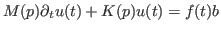
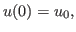
where
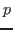
the spatially varying parameters we wish to estimate, given discrete pressure head measurements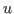
. The solution can be written in terms of solutions to shifted linear systemswhere
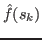
denotes the Laplace Transform of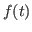
,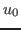
is the initial condition and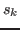
,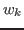
are theKrylov subspace methods are particularly attractive to solve these shifted systems of equations (1) because the shift-invariance property of Krylov subspaces allows us to build a single solution space across all shifts and an approximate solution for each shift is then obtained by projecting into a smaller subspace. A single preconditioner of the form
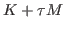
, for an appropriately chosen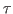
, does not successfully precondition all the systems when the range of values of is large. We consider a flexible Arnoldi algorithm for shifted systems that employs multiple preconditioners of the form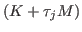
for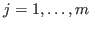
. Changing the preconditioner at each iteration allows for better preconditioning of the shifted system across the entire range of shifts.The performance of our algorithm will be demonstrated on some challenging synthetic examples of large-scale inverse problems arising from transient hydraulic tomography. We demonstrate that the Krylov subspace accelerated Laplace Transform solver provides a significantly cheaper alternative to time-stepping based solvers.